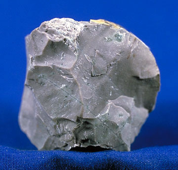
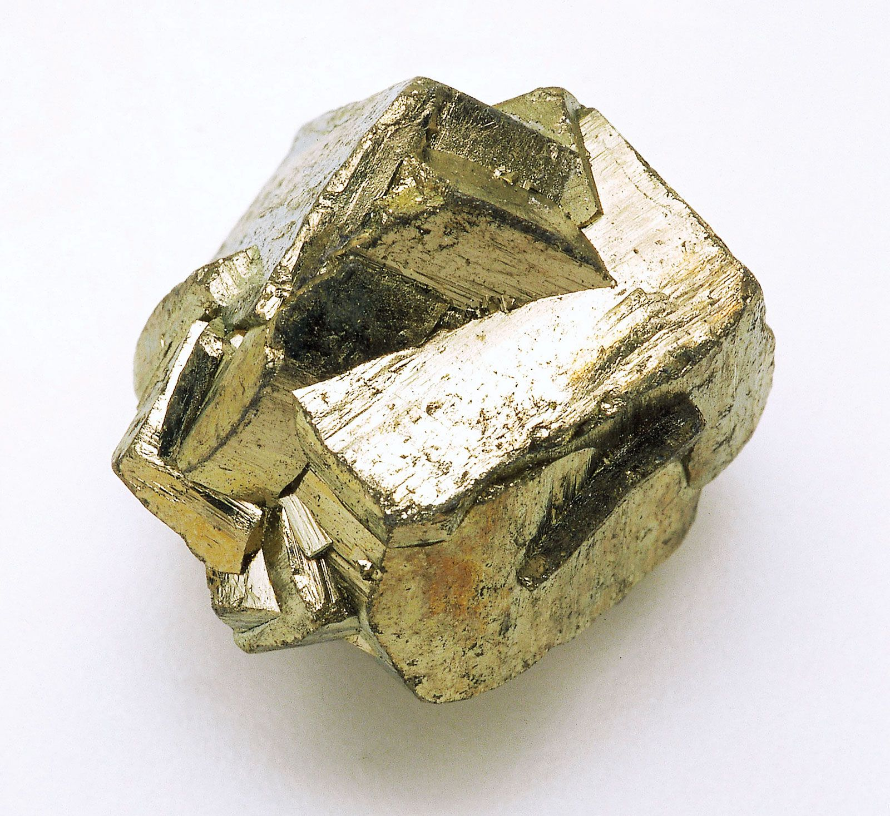
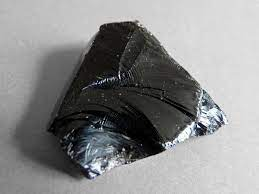

id="mainheader">Cool Rocks!
Chert
Chert is a fine-grained, sedimentary rock. This is a rock made up of silicon dioxide (SiO2) through a combining of minerals. There are common in the US plains where flat layers allow for deformation by wind and erosion.
Pyrite
Pyrite is a natrally occuring mineral that is commonly refered to as "fool's gold". This is technically not a rock but is commonly categorized as one as it can contain various mineral intrusions. The mineral is semi-conductive and contains a low hardness.
Obsidian
Obsidian is a volcanic rock (igneous) made from lava extrusion. This means the lava spilled onto the earth's surface heating up the metamorphic or sedimentary rocks in the area. This intense heat causes the layered look. This is then rapidly cooled causing the low mineral composition.
